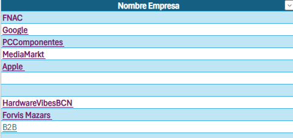

AUTOCANDIDATURA
INFORMACIÓ SOBRE LA MEVA AUTOCANDIDATURA

Treball d'Autocandidatura
En aquesta captura pots veure un treball d'Autocandidatura. Aquesta tasca consistia a crear un Excel on posàvem 5 empreses on ens agradaria treballar i 3 empreses per realitzar pràctiques.